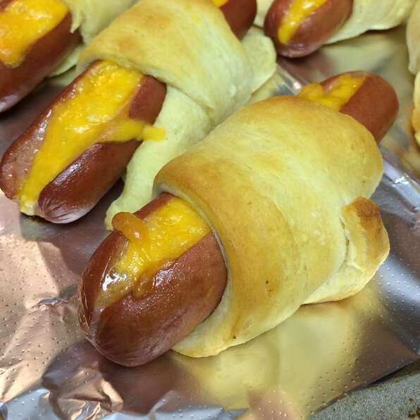

Crescent Dogs

Description:
Crescent rolls update the popular 'pig-in-blanket' concept, along with a yummy surprise: melted cheese in each frank.
Ingredients:
- 8 hot dogs
- 4 slices American cheese, cut in to 6 strips
- 1 (8 ounce) can Pilsbury refrigerated crescent dinner rolls
Steps:
- Heat oven to 375 degrees F. Slit hot dogs to within 1/2 inch of ends; insert 3 strips of cheese into each slit.
- Separate dough into triangles. Wrap dough triangle around each hot dog. Place on ungreased cookie sheet, cheese side up.
- Bake 12-15 min or until golden brown.